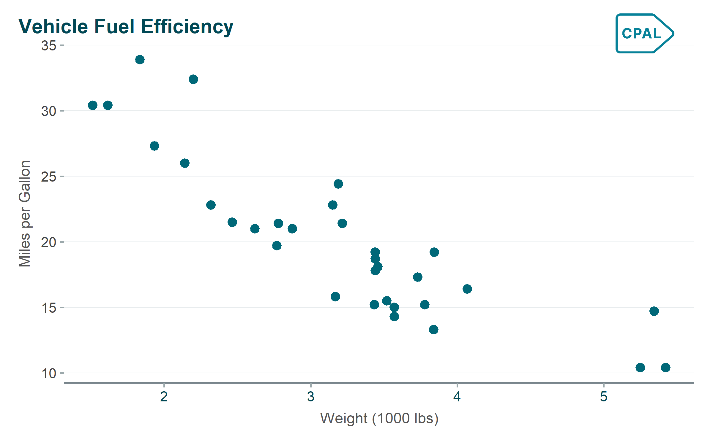
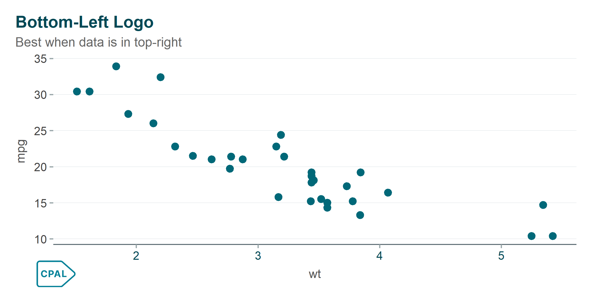
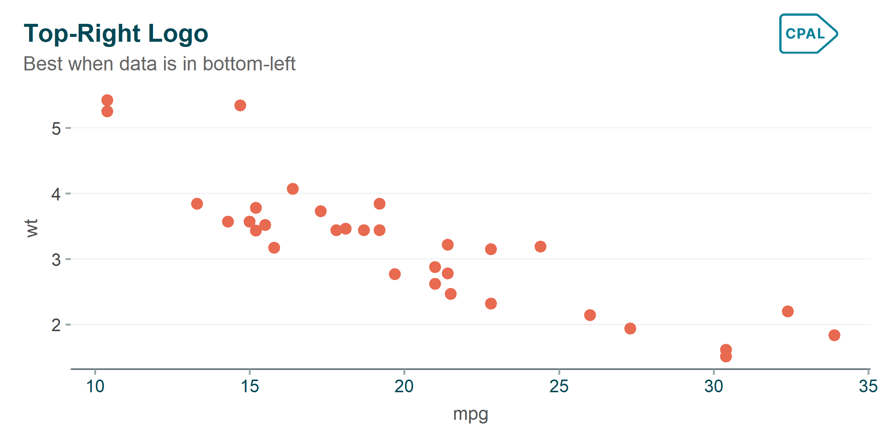
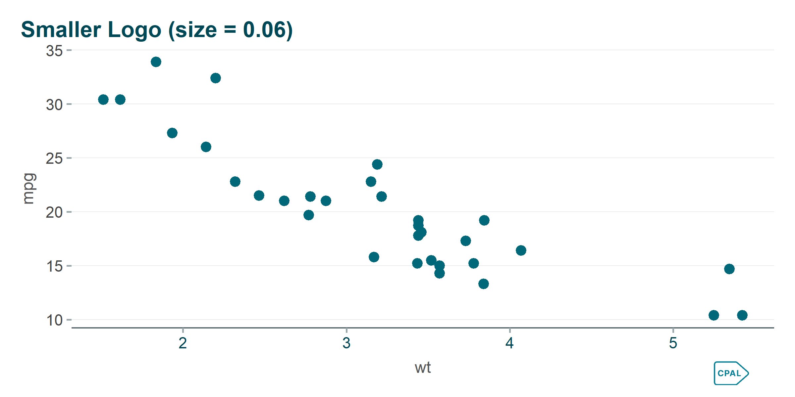
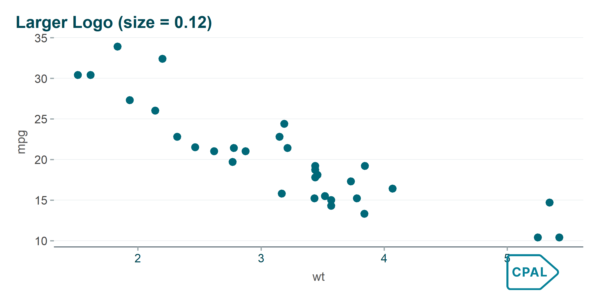

Auto-detection: Automatically uses white logo for dark themes
Proper sizing: Maintains aspect ratio
Non-intrusive: Places logo outside the plot area
Examples
Default position (top-right):
Show code
p <-ggplot(mtcars, aes(x = wt, y = mpg)) +geom_point(color ="#006878", size =3) +labs(title ="Vehicle Fuel Efficiency",x ="Weight (1000 lbs)",y ="Miles per Gallon" ) +theme_cpal()add_cpal_logo(p)

Plot with CPAL logo in default position
Changing position when logo overlaps data:
If the default top-right position overlaps your data, try a different corner:
# Data concentrated in top-right - use bottom-leftp_topright <-ggplot(mtcars, aes(x = wt, y = mpg)) +geom_point(color ="#006878", size =3) +labs(title ="Bottom-Left Logo", subtitle ="Best when data is in top-right") +theme_cpal()print(add_cpal_logo(p_topright, position ="bottom-left"))# Data concentrated in bottom-left - use top-rightp_bottomleft <-ggplot(mtcars, aes(x = mpg, y = wt)) +geom_point(color ="#E86A50", size =3) +labs(title ="Top-Right Logo", subtitle ="Best when data is in bottom-left") +theme_cpal()print(add_cpal_logo(p_bottomleft, position ="top-right"))
Show code

Comparing logo positions
Show code

Comparing logo positions
Adjusting logo size:
p_base <-ggplot(mtcars, aes(x = wt, y = mpg)) +geom_point(color ="#006878", size =3) +theme_cpal()# Smaller logo (0.06)print(add_cpal_logo(p_base +labs(title ="Smaller Logo (size = 0.06)"),position ="bottom-right", size =0.06))# Larger logo (0.12)print(add_cpal_logo(p_base +labs(title ="Larger Logo (size = 0.12)"),position ="bottom-right", size =0.12))
Show code

Different logo sizes
Show code

Different logo sizes
Dark theme (auto-selects white logo):
Show code
p_dark <-ggplot(mtcars, aes(x = wt, y = mpg, color =factor(cyl))) +geom_point(size =3) +scale_color_cpal("main_3") +labs(title ="Dark Theme with Logo",subtitle ="White logo is automatically selected",color ="Cylinders" ) +theme_cpal_dark()add_cpal_logo(p_dark, position ="bottom-right")
Logo automatically adapts to dark theme
Custom logo path:
# Use your own logop_custom <-add_cpal_logo(p, logo_path ="path/to/custom_logo.png")
Accessibility Checking
check_plot_accessibility()
Analyze a plot for accessibility issues.
check_plot_accessibility(plot, verbose =TRUE)
What It Checks
Text Size: Ensures text elements are large enough to read
Color Contrast: Validates colors against WCAG standards
Colorblind Safety: Checks if colors are distinguishable
Data-to-Ink Ratio: Identifies unnecessary visual elements
Examples
p <-ggplot(mtcars, aes(x = wt, y = mpg, color =factor(cyl))) +geom_point() +scale_color_cpal("main_3") +theme_cpal()# Run accessibility checkcheck_plot_accessibility(p)#> Checking plot accessibility...#>#> ── Text Size ──#> ✓ Title size: 18pt (OK)#> ✓ Axis text size: 12pt (OK)#> ✓ Legend text size: 12pt (OK)#>#> ── Color Contrast ──#> ✓ All colors pass WCAG AA on white background#>#> ── Colorblind Safety ──#> ✓ Color palette is distinguishable for common colorblindness types#>#> Overall: PASS# Quiet mode (returns TRUE/FALSE)is_accessible <-check_plot_accessibility(p, verbose =FALSE)
Workflow: Complete Plot Creation
Step-by-Step Example
library(cpaltemplates)library(ggplot2)library(dplyr)# 1. Prepare dataplot_data <- mtcars |>mutate(cylinders =factor(cyl),transmission =ifelse(am ==1, "Manual", "Automatic") )# 2. Create the visualizationp <-ggplot(plot_data, aes(x = wt, y = mpg, color = cylinders)) +geom_point(size =3, alpha =0.8) +scale_color_cpal("main_3") +labs(title ="Fuel Efficiency by Vehicle Weight",subtitle ="Analysis of 32 automobile models",x ="Weight (1,000 lbs)",y ="Miles per Gallon",color ="Cylinders",caption ="Source: Motor Trend, 1974" ) +theme_cpal()# 3. Check accessibilitycheck_plot_accessibility(p)# 4. Add brandingp_branded <-add_cpal_logo(p, position ="top-right")# 5. Save in multiple formatssave_cpal_plot(p_branded, "efficiency_report.png", size ="default")save_cpal_plot(p_branded, "efficiency_slide.png", size ="slide")save_cpal_plot(p_branded, "efficiency_print.pdf", size ="default", dpi =600)
# PNG for web/presentations (most common)save_cpal_plot(p, "plot.png")# PDF for print/publicationssave_cpal_plot(p, "plot.pdf")# SVG for web with scalingsave_cpal_plot(p, "plot.svg")# TIFF for journals requiring itsave_cpal_plot(p, "plot.tiff", dpi =600)
# Create consistent figures for a reportcreate_report_figure <-function(data, title, filename) { p <-ggplot(data, aes(x = wt, y = mpg)) +geom_point(color ="#007A8C") +labs(title = title) +theme_cpal_print() p_logo <-add_cpal_logo(p, position ="bottom-right", size =0.07)save_cpal_plot(p_logo, filename, size ="default", dpi =300)invisible(p_logo)}# Generate figurescreate_report_figure(mtcars, "Figure 1: All Vehicles", "fig1.png")create_report_figure(filter(mtcars, cyl ==4), "Figure 2: 4-Cylinder", "fig2.png")
Presentation Deck
# Create slides-ready plotsslides <-list(list(data = mtcars, title ="Overview"),list(data =filter(mtcars, am ==1), title ="Manual Transmission"),list(data =filter(mtcars, am ==0), title ="Automatic Transmission"))for (i inseq_along(slides)) { p <-ggplot(slides[[i]]$data, aes(x = wt, y = mpg, color =factor(cyl))) +geom_point(size =4) +scale_color_cpal("main_3") +labs(title = slides[[i]]$title) +theme_cpal(base_size =20) # Larger for slidessave_cpal_plot(p, sprintf("slide_%02d.png", i), size ="slide")}
Troubleshooting
Logo Not Appearing
# Check that cowplot is installedif (!requireNamespace("cowplot", quietly =TRUE)) {install.packages("cowplot")}# Check that magick is installedif (!requireNamespace("magick", quietly =TRUE)) {install.packages("magick")}
Fonts Not Rendering in Saved Files
# Ensure fonts are registered before savingsetup_cpal_google_fonts()# For PDF output, use Cairo devicesave_cpal_plot(p, "plot.pdf", device = cairo_pdf)
File Size Too Large
# Reduce DPI for websave_cpal_plot(p, "plot.png", dpi =150)# Use JPEG for photossave_cpal_plot(p, "plot.jpg", quality =85)# Simplify the plotp_simple <- p +theme(panel.grid =element_blank())save_cpal_plot(p_simple, "plot.png")